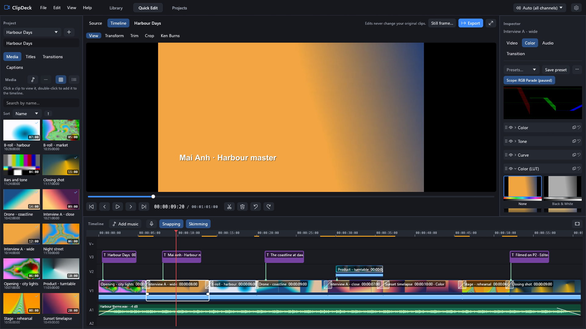

From P2 card to finished video, in one app
ClipDeck is a Windows app for camera operators and video editors. Manage the clips on your Panasonic P2 cards quickly and safely, then edit them into finished videos with Quick Edit. New in version 2.0.

Edit videos
- Multi-track timeline — a magnetic main track plus video lanes for picture-in-picture and B-roll, music and sound lanes, markers, ripple delete, roll and slip, unlimited undo.
- Titles and transitions — animated titles with full Vietnamese support; Dissolve, Wipe, Flow, Fade to Color and Scrapbook.
- Color — curves, Color Slice, .cube LUTs, presets and an RGB Parade scope.
- Sound — ducking under speech, loudness normalization, noise reduction, EQ, reverb and voiceover recording.
- Automatic captions in English and Vietnamese, made on your PC.
- Export — MP4 (H.264 or HEVC, GPU accelerated) with presets for YouTube, TikTok, Instagram, Facebook and X; audio, still frame and GIF too. Vertical, square and 4K formats.

Manage P2 clips
- See everything at a glance — real thumbnails, duration, timecode, shooting date, codec and camera details.
- Play with sound — all audio channels are mixed so you always hear the microphone, or pick CH1+2 / CH3+4.
- Copy, cut, paste, move, lock and delete — every related file always travels with its clip; copies are verified before anything is removed, and writing to a card always asks first.
- One-click backup of a whole card; spanned clips are recognised as a group.
English and Vietnamese interface. No account, no ads, no tracking, no uploads.
Từ thẻ P2 đến video hoàn chỉnh, trong một ứng dụng
ClipDeck là ứng dụng Windows cho người quay phim và dựng phim. Quản lý clip trên thẻ Panasonic P2 nhanh và an toàn, rồi dựng thành video hoàn chỉnh với Quick Edit. Mới trong phiên bản 2.0.
Dựng phim
- Timeline nhiều lớp — track chính tự nối liền, các lớp video cho hình trong hình và cảnh phụ, lớp nhạc và âm thanh, marker, xóa dồn, roll, slip, hoàn tác không giới hạn.
- Chữ và chuyển cảnh — chữ động hiển thị tiếng Việt đầy đủ; Dissolve, Wipe, Flow, Fade to Color, Scrapbook.
- Chỉnh màu — đường cong, Color Slice, LUT .cube, preset và biểu đồ RGB Parade.
- Âm thanh — tự hạ nhạc khi có lời nói, chuẩn hóa độ lớn, giảm ồn, EQ, vang, ghi lời thuyết minh.
- Phụ đề tự động tiếng Việt và tiếng Anh, tạo ngay trên máy.
- Xuất video — MP4 (H.264 hoặc HEVC, tăng tốc GPU) với preset cho YouTube, TikTok, Instagram, Facebook, X; xuất cả âm thanh, ảnh tĩnh, GIF. Khung dọc, vuông và 4K.
Quản lý clip P2
- Xem nhanh mọi thông tin — ảnh thu nhỏ thật, thời lượng, timecode, ngày quay, codec, thông tin máy quay.
- Phát có tiếng — tự trộn mọi kênh âm thanh để luôn nghe được micro, hoặc chọn CH1+2 / CH3+4.
- Sao chép, cắt, dán, di chuyển, khóa, xóa — mọi tệp liên quan luôn đi cùng clip; bản sao được kiểm tra trước khi xóa nguồn, luôn hỏi trước khi ghi lên thẻ.
- Sao lưu cả thẻ một lần bấm; clip quay liền nhiều phần được nhận diện thành nhóm.
Giao diện tiếng Việt và tiếng Anh. Không tài khoản, không quảng cáo, không theo dõi, không tải lên.